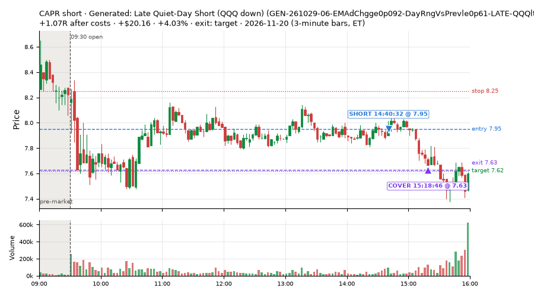
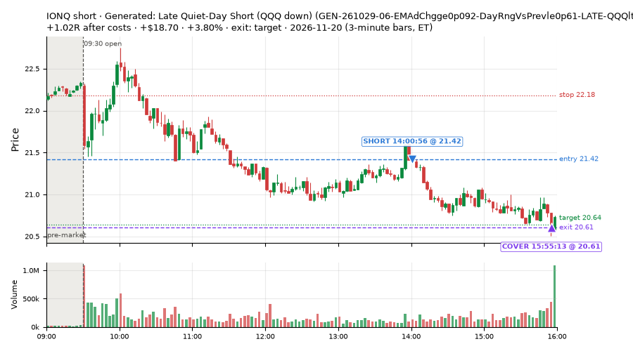
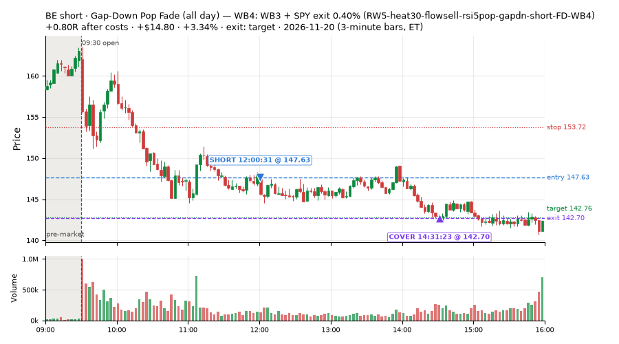
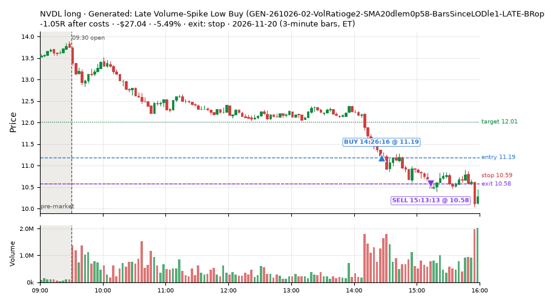
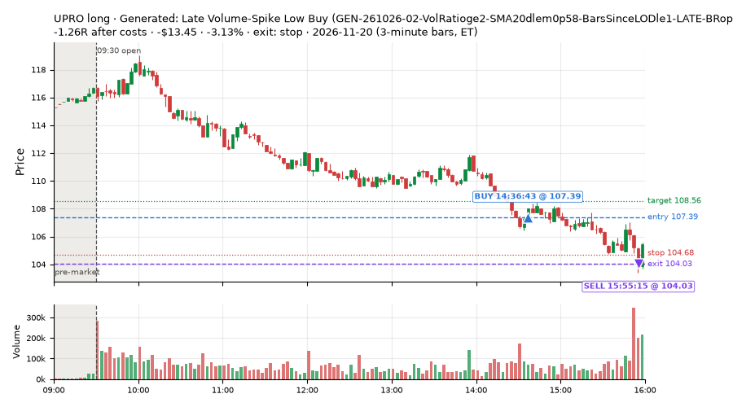
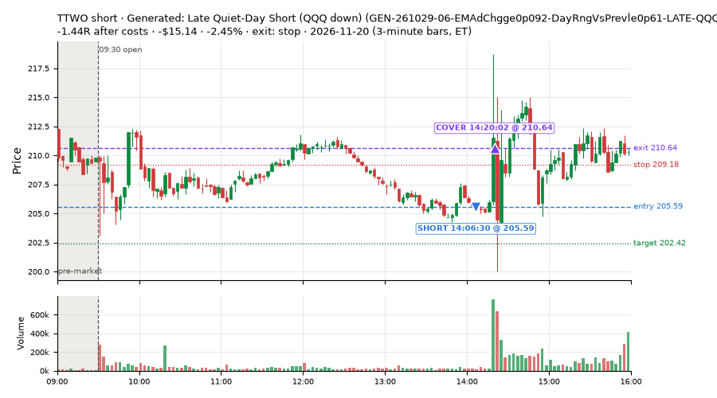
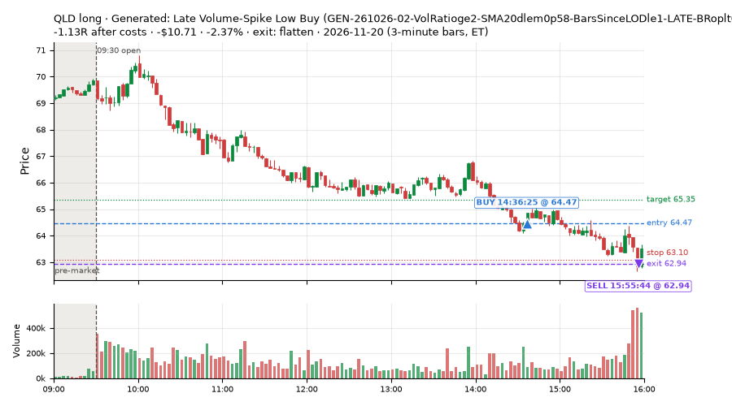
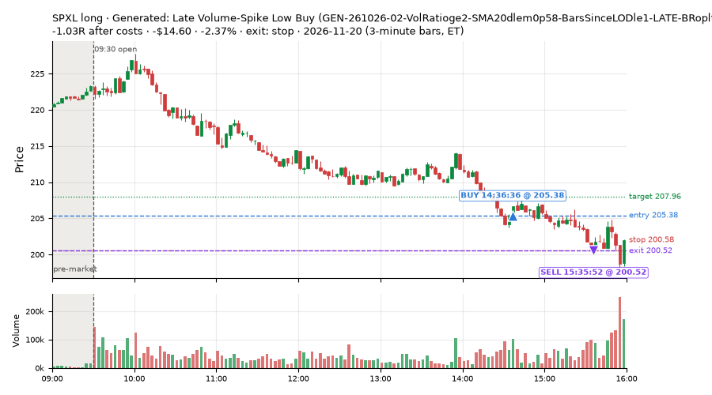

101 trades · win rate 50% · P/L $76.97
PROBATION: no live setup has passed both locked test periods. 10 owner-directed setups added 2026-10-08 (MarcoFlow top 5 + 5 new), untested live. RW6G1 (RW6 + VWAP band guard) added 2026-10-09, probation.

| Symbol | Setup | Side | In | Out | Entry | Exit | Exit reason | % gained | P/L |
|---|---|---|---|---|---|---|---|---|---|
| CAPR | Generated: Late Quiet-Day Short (QQQ down) (GEN-261029-06-EMAdChgge0p092-DayRngVsPrevle0p61-LATE-QQQltm0p3-t1s1-short) | short | 14:40 | 15:18 | 7.95 | 7.63 | target | +4.03% | $20.16 |
| IONQ | Generated: Late Quiet-Day Short (QQQ down) (GEN-261029-06-EMAdChgge0p092-DayRngVsPrevle0p61-LATE-QQQltm0p3-t1s1-short) | short | 14:00 | 15:55 | 21.42 | 20.61 | target | +3.80% | $18.70 |
| BE | Gap-Down Pop Fade (all day) — WB4: WB3 + SPY exit 0.40% (RW5-heat30-flowsell-rsi5pop-gapdn-short-FD-WB4) | short | 12:00 | 14:31 | 147.63 | 142.70 | target | +3.34% | $14.80 |
| Symbol | Setup | Side | In | Out | Entry | Exit | Exit reason | % lost | P/L |
|---|---|---|---|---|---|---|---|---|---|
| NVDL | GEN-261026-02-VolRatioge2-SMA20dlem0p58-BarsSinceLODle1-LATE-BRoplt0p35-t1s1-long | long | 14:26 | 15:13 | 11.19 | 10.58 | stop | -5.49% | $-27.04 |
| UPRO | GEN-261026-02-VolRatioge2-SMA20dlem0p58-BarsSinceLODle1-LATE-BRoplt0p35-t1s1-long | long | 14:36 | 15:55 | 107.39 | 104.03 | stop | -3.13% | $-13.45 |
| TTWO | GEN-261029-06-EMAdChgge0p092-DayRngVsPrevle0p61-LATE-QQQltm0p3-t1s1-short | short | 14:06 | 14:20 | 205.59 | 210.64 | stop | -2.45% | $-15.14 |
| QLD | GEN-261026-02-VolRatioge2-SMA20dlem0p58-BarsSinceLODle1-LATE-BRoplt0p35-t1s1-long | long | 14:36 | 15:55 | 64.47 | 62.94 | flatten | -2.37% | $-10.71 |
| SPXL | GEN-261026-02-VolRatioge2-SMA20dlem0p58-BarsSinceLODle1-LATE-BRoplt0p35-t1s1-long | long | 14:36 | 15:35 | 205.38 | 200.52 | stop | -2.37% | $-14.60 |








Signal to fill: median 1s, 90th percentile 3s (101 trades). Bars close each minute; the order follows the bar close.
Best excursion (MFE): median 0.68R; worst (MAE) median 0.56R. 22% of trades never got +0.25R in our favour; 2 reached +1R and still closed at or below 0.
| Symbol | Setup | Best R | Worst R | Closed R |
|---|---|---|---|---|
| VV | GEN-261026-02-VolRatioge2-SMA20dlem0p58-BarsSinceLODle1-LATE-BRoplt0p35-t1s1-long | +1.31 | -1.00 | -1.21 |
| VOO | GEN-261026-02-VolRatioge2-SMA20dlem0p58-BarsSinceLODle1-LATE-BRoplt0p35-t1s1-long | +1.35 | -1.04 | -1.16 |
| USB | GEN-261026-02-VolRatioge2-SMA20dlem0p58-BarsSinceLODle1-LATE-BRoplt0p35-t1s1-long | +0.93 | -1.06 | -1.15 |
| UDOW | GEN-261026-02-VolRatioge2-SMA20dlem0p58-BarsSinceLODle1-LATE-BRoplt0p35-t1s1-long | +0.97 | -1.03 | -1.06 |
| QQQM | GEN-261026-02-VolRatioge2-SMA20dlem0p58-BarsSinceLODle1-LATE-BRoplt0p35-t1s1-long | +0.74 | -1.02 | -1.08 |
| Entry time | Trades | Win | Avg R | P/L |
|---|---|---|---|---|
| 09:50-10:30 | 2 | 100% | +0.42 | $9.04 |
| 10:30-11:30 | 5 | 100% | +0.87 | $31.02 |
| 11:30-13:00 | 4 | 100% | +0.81 | $36.51 |
| 13:00-14:00 | 3 | 67% | +0.22 | $4.40 |
| 14:00-16:00 | 87 | 44% | -0.21 | $-4.00 |
| Setup | Trades | Win | Avg R after costs | Adj R (net of SPY) | Avg R ex-market (all sessions) | P/L |
|---|---|---|---|---|---|---|
| Failed Opening-Range-Low Break Long — WB5: cost filter, SPY gate, wider stop (CWT14-failbrk-orl-p10-long-WB5) | 1.0 | 100% | +0.20 | +0.35 | +0.10 (beta +0.27, n 76) | $2.74 |
| Generated: PM Runner Fade (SPY down) (GEN-261019-09-EMAdChgge0p15-Since950ATRge0p6-PM-SPYltm0p5-t05s1-short) | 2.0 | 0% | -1.09 | -1.58 | -0.07 (beta +1.48, n 8) | $-13.40 |
| Generated: Late Volume-Spike Low Buy (GEN-261026-02-VolRatioge2-SMA20dlem0p58-BarsSinceLODle1-LATE-BRoplt0p35-t1s1-long) | 45.0 | 7% | -0.85 | -0.16 | -0.61 (beta +0.18, n 64) | $-232.52 |
| Generated: Late Quiet-Day Short (QQQ down) (GEN-261029-06-EMAdChgge0p092-DayRngVsPrevle0p61-LATE-QQQltm0p3-t1s1-short) | 40.0 | 88% | +0.55 | -0.17 | +0.14 (beta -0.30, n 137) | $241.92 |
| Gap-Down Bounce Short, Heavy Selling — WB3: RSI 55-60 + 1R >= 0.40% + to 13:00 + SPY-since-09:50 gate (RW1-gapdn-bounce-flowsell-short-FD-WB3) | 7.0 | 100% | +0.86 | +0.22 | -0.28 (beta -1.06, n 42) | $44.45 |
| Gap-Down Pop Fade (all day) — WB4: WB3 + SPY exit 0.40% (RW5-heat30-flowsell-rsi5pop-gapdn-short-FD-WB4) | 6.0 | 83% | +0.47 | -0.26 | +0.08 (beta -0.30, n 19) | $33.78 |
Market direction (SPY, beta 1) accounted for $153.50 of today's $76.97; the rest ($-76.53) came from the setups themselves. Avg R net of SPY: -0.17 (incl. a hedge leg's cost; report only).
22 setups live today. Today: 206 signals, 101 taken, 1 lost because another setup held the symbol (0%). Since 2026-11-12 (7 sessions): 1263 signals, 601 taken, 4 lost to other setups (0%). Peak open positions today 77 of 400 slots. Earnings blackout removed 181 symbols before scanning.
Simulated playing time (not live): 660 what-if trades of signals not taken, avg +0.02R, 63% winners; of them 4 lost to another setup (avg +0.17R).
Silent: GEN-261027-01-MACDhge0p12-Ret15mATRlem0p069-LATE-BRvwgt0p5-t05s1-long-WB5, IDX2-spy075-0945-3x-trail, LD4-st4-breadthup-t1s05-long, GEN-261027-02-NewLOD-RSI14le35-Gapge2-PM-SPYup-holdtr-long, GEN-261027-03-NewLOD-DayPosle0p19-SMA20dlem0p59-LAM-SPYgt0p5-hold-long, CWT04-backside-vwaptest-a25-short, GEN-261022-07-Z12lem1p9-FlowShiftlem0p96-ATRdge3p6-AM-BRopgt0p5-t1s1-short
| Prio | Setup | Today sig / taken | Sessions | Signals / taken / trades | Taken/day | Expected/day | Lost to other setups | Lost to (setup n) | Top skip reasons | SIMULATED: not-taken n / avg R / win | Verdict |
|---|---|---|---|---|---|---|---|---|---|---|---|
| 1 | Gap-Down Pop Fade (all day) — WB4: WB3 + SPY exit 0.40% RW5-heat30-flowsell-rsi5pop-gapdn-short-FD-WB4 | 10 / 6 | 4 | 30 / 19 / 19 | 4.75 | – | 0 | – | spread / quote / size 11 | 11 / +0.05R / 64% | ok 23.8 entries/week |
| 2 | Gap-Down Bounce Short, Heavy Selling — WB3: RSI 55-60 + 1R >= 0.40% + to 13:00 + SPY-since-09:50 gate RW1-gapdn-bounce-flowsell-short-FD-WB3 | 14 / 7 | 4 | 70 / 42 / 42 | 10.50 | – | 0 | – | spread / quote / size 17, other 10, not shortable / shorts off 1 | 28 / +0.10R / 61% | ok 52.5 entries/week |
| 3 | Generated: Late Pullback Buy (MACD rising) — WB5: 14:00-14:30, $100M ADV, breadth gate GEN-261027-01-MACDhge0p12-Ret15mATRlem0p069-LATE-BRvwgt0p5-t05s1-long-WB5 | 0 / 0 | 4 | 0 / 0 / 0 | 0.00 | – | 0 | – | – | 0 / – | silent no signals in 4 session(s); no expected rate on file |
| 4 | NS2 Short, SPY Up 0.5%, Not Friday (near-miss) NM-RWN4-ns2-spyup05-notfri-short | 0 / 0 | 1 | 0 / 0 / 0 | 0.00 | – | 0 | – | – | 0 / – | quiet - wait no signals in 1 session(s); too early to tell |
| 5 | Generated: Open Range-Expansion Short GEN-261029-09-RangeExpge1p6-Since950ATRlem0p43-OPEN-BRvwgt0p5-hold-short | 0 / 0 | 1 | 0 / 0 / 0 | 0.00 | – | 0 | – | – | 0 / – | quiet - wait no signals in 1 session(s); too early to tell |
| 6 | Monday Weak-RS NS3 Short (near-miss) NM-RWN5-ns3-mon-weakrs-short | 0 / 0 | 7 | 1 / 1 / 1 | 0.14 | – | 0 | – | – | 0 / – | slow 0.7 entries/week; ~84 weeks to 60 trades |
| 7 | Generated: Late Volume Spike Buy (wide day) GEN-261019-07-VolRatioge2-UpWickge0p59-DayRngVsPrevge1p5-LATE-SPYgt0p5-t05s1-long | 0 / 0 | 1 | 0 / 0 / 0 | 0.00 | – | 0 | – | – | 0 / – | quiet - wait no signals in 1 session(s); too early to tell |
| 8 | Generated: Lunch Selling-Flush Buy (extended) GEN-261027-10-FlowShiftlem1p2-MACDhge0p079-SMA20dge0p59-LUNCH-BRopgt0p65-holdtr-long | 0 / 0 | 1 | 0 / 0 / 0 | 0.00 | – | 0 | – | – | 0 / – | quiet - wait no signals in 1 session(s); too early to tell |
| 9 | Generated: Late-AM Below-Range Turn Buy GEN-261028-05-EMAdChgge0p093-ORLdistlem0p42-LAM-QQQgt0p6-holdtr-long | 0 / 0 | 1 | 0 / 0 / 0 | 0.00 | – | 0 | – | – | 0 / – | quiet - wait no signals in 1 session(s); too early to tell |
| 10 | Index Dip Bounce 2 3x S&P IDX2-spy075-0945-3x-trail | 0 / 0 | 7 | 0 / 0 / 0 | 0.00 | – | 0 | – | – | 0 / – | silent no signals in 7 session(s); no expected rate on file |
| 11 | * Oversold EMA Cross-Down with Breadth Turning Up (near-miss) LD4-st4-breadthup-t1s05-long | 0 / 0 | 7 | 0 / 0 / 0 | 0.00 | – | 0 | – | – | 0 / – | silent no signals in 7 session(s); no expected rate on file |
| 12 | Generated: PM Runner Fade (SPY down) GEN-261019-09-EMAdChgge0p15-Since950ATRge0p6-PM-SPYltm0p5-t05s1-short | 21 / 2 | 5 | 53 / 8 / 8 | 1.60 | – | 0 | – | not shortable / shorts off 39, other 4, spread / quote / size 1 | 44 / +0.01R / 66% | slow 8.0 entries/week; ~8 weeks to 60 trades |
| 13 | Generated: Late Volume-Spike Low Buy GEN-261026-02-VolRatioge2-SMA20dlem0p58-BarsSinceLODle1-LATE-BRoplt0p35-t1s1-long | 66 / 45 | 5 | 98 / 64 / 64 | 12.80 | – | 1 | GEN-261029-06-EMAdChgge0p092-DayRngVsPrevle0p61-LATE-QQQltm0p3-t1s1-short 1 | other 17, spread / quote / size 15, symbol held by another setup 1 | 34 / -0.48R / 24% | ok 64.0 entries/week |
| 14 | Panic Flush Reversal (deep, 5x volume) CWT05-flush-m075-v5-long | 0 / 0 | 7 | 3 / 2 / 2 | 0.29 | – | 0 | – | broker rejected 1 | 1 / +0.59R / 100% | slow 1.4 entries/week; ~42 weeks to 60 trades |
| 15 | Generated: PM Gap-Up New-Low Buy (SPY up) GEN-261027-02-NewLOD-RSI14le35-Gapge2-PM-SPYup-holdtr-long | 0 / 0 | 5 | 0 / 0 / 0 | 0.00 | – | 0 | – | – | 0 / – | silent no signals in 5 session(s); no expected rate on file |
| 16 | Generated: Late-AM New-Low Buy (SPY up) GEN-261027-03-NewLOD-DayPosle0p19-SMA20dlem0p59-LAM-SPYgt0p5-hold-long | 0 / 0 | 5 | 0 / 0 / 0 | 0.00 | – | 0 | – | – | 0 / – | silent no signals in 5 session(s); no expected rate on file |
| 17 | Generated: Lunch New-Low Short (selling) GEN-261026-03-NewLOD-Flow3lem0p37-FromOpenATRlem0p78-LUNCH-BRopgt0p5-holdtr-short | 0 / 0 | 7 | 4 / 4 / 4 | 0.57 | – | 0 | – | – | 0 / – | slow 2.9 entries/week; ~21 weeks to 60 trades |
| 18 | Generated: Late Quiet-Day Short (QQQ down) GEN-261029-06-EMAdChgge0p092-DayRngVsPrevle0p61-LATE-QQQltm0p3-t1s1-short | 91 / 40 | 5 | 396 / 137 / 137 | 27.40 | – | 2 | CWT14-failbrk-pdl-p10-lowvol-long 1, GEN-261026-02-VolRatioge2-SMA20dlem0p58-BarsSinceLODle1-LATE-BRoplt0p35-t1s1-long 1 | per-setup cap 100, not shortable / shorts off 67, spread / quote / size 52 | 259 / +0.20R / 70% | ok 137.0 entries/week |
| 19 | Afternoon VWAP Reclaim Fade NS4-pm-vwap-reclaim-oversold-short | 2 / 0 | 7 | 38 / 13 / 13 | 1.86 | 3.05 | 0 | – | spread / quote / size 11, other 11, not shortable / shorts off 3 | 25 / +0.17R / 60% | slow 9.3 entries/week; ~6 weeks to 60 trades |
| 20 | Failed Opening-Range-Low Break Long — WB5: cost filter, SPY gate, wider stop CWT14-failbrk-orl-p10-long-WB5 | 2 / 1 | 4 | 103 / 76 / 76 | 19.00 | – | 0 | – | spread / quote / size 26, broker rejected 1 | 27 / +0.04R / 74% | ok 95.0 entries/week |
| 21 | Late-Day ETF Dip Buy, High-Dispersion Days ETFDISP-late-dip-hidisp-long | 0 / 0 | 1 | 0 / 0 / 0 | 0.00 | – | 0 | – | – | 0 / – | quiet - wait no signals in 1 session(s); too early to tell |
| 22 | ETF One-Bar Shock Snap-Back ULT-HV2-shock-snap-etf-long-K | 0 / 0 | 1 | 0 / 0 / 0 | 0.00 | – | 0 | – | – | 0 / – | quiet - wait no signals in 1 session(s); too early to tell |
Every trade is attached as a CSV you can open and edit in Excel or Google Sheets. Live page: https://misiti15.github.io/MCF/live/